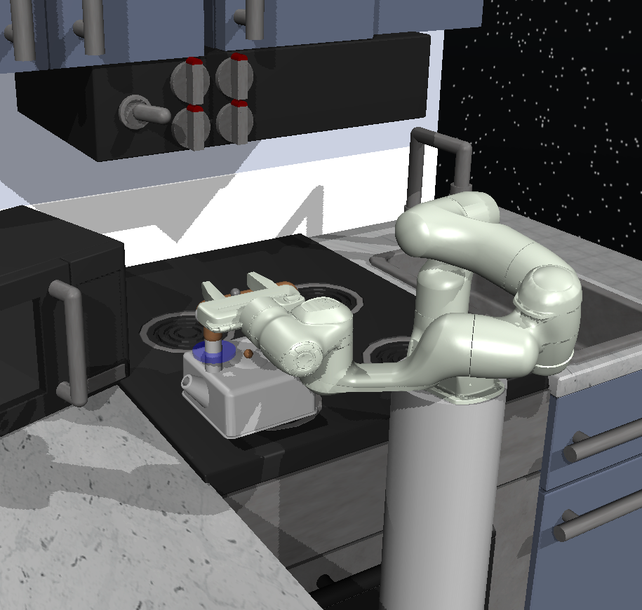
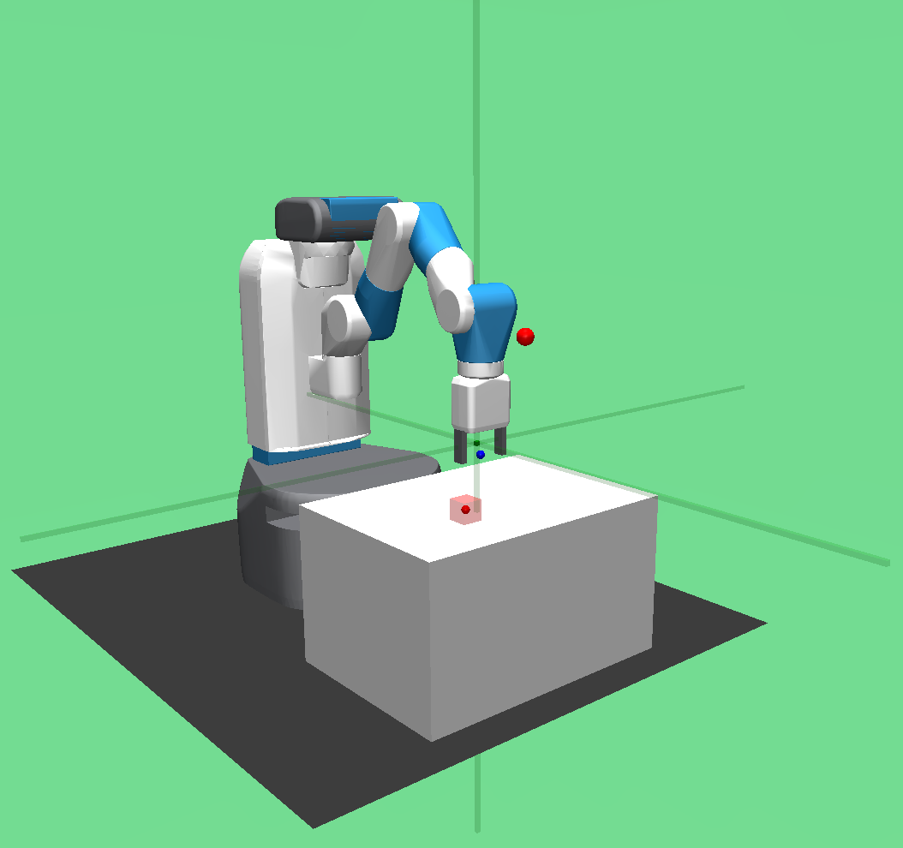
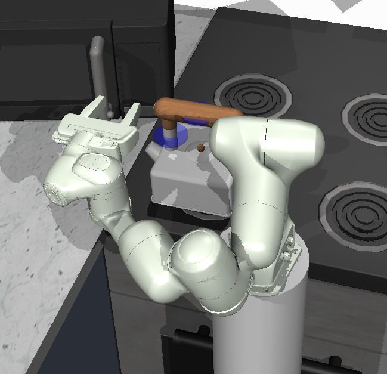
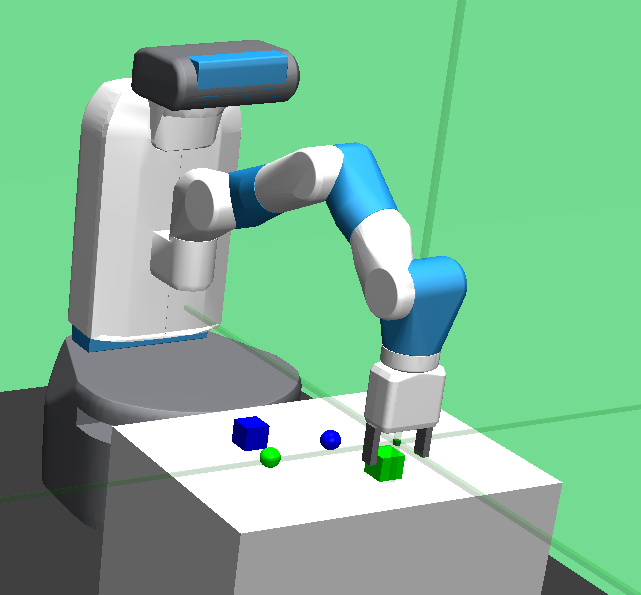
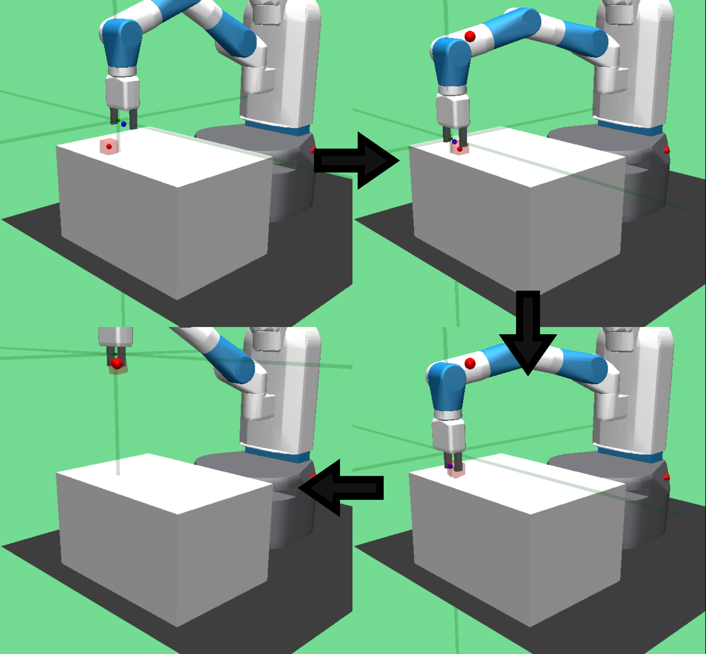

TASC: Fast Skill Chaining for Complex Sequential Robotic Tasks via Pure Imitation Learning
Abstract
We present TASC: Termination Action Skill Chaining, a method for pure imitation learning of complex sequential long-horizon tasks, requiring only simple sub-task annotations and no environmental reward. We define a new termination action dimension to allow each sub-task’s termination function to be learned jointly with its policy, giving it the ability to end its sub-task. These policies are trained in parallel on segments of the demonstration, and then chained together at inference time, providing a massive speed-up over sequential training. We evaluate TASC on three complex robotic manipulation tasks and show improved success rates compared to state of the art methods.
Keywords: Robotics, Imitation Learning, Skill Chaining, Reinforcement Learning, Option Framework
1 INTRODUCTION
A key challenge in robotics is learning to break up complex tasks into shorter, easier sub-tasks which can be chained together to complete the entire task. Within this scope, we are interested in two key challenges: planning strongly sequential long-horizon tasks, and learning such tasks purely from demonstrations without having to provide an external reward. The combination of these two challenges has received less attention and forms the basis of our work.
We focus on problems where sub-tasks must be completed in a strongly defined order to achieve the final goal, and any failures on the way to the goal become a failure for the entire task. This special case is common in industrial settings such as pharmaceutical robotics, where chemicals must be handled in a specific order in order to facilitate a specific chemical reaction; and manufacturing of building materials, where blocks must be wrapped before they are placed on a pallet. In these fields, safety standards dictate that the robot cannot move onto the next step until it is safe to do so (ISO, 2025a, b).
Many existing approaches solve the general problem of learning tasks with multiple sub-tasks, usually by learning multiple sub-policies and using them at different stages to perform different parts of the task. We demonstrate that many of these approaches do not work well on strongly-sequential long-horizon tasks (see Section 5.4).
We argue that, in order to ensure generality, these approaches rely on one or more of the following implicit assumptions, which make them less suitable for our type of task:

-
1.
One-step option switching: Switching to any sub-policy can be done at any time, meaning that there is no explicit waiting for a termination condition before deciding to change to the next policy. This allows the next sub-task to start before the current sub-task is completed.
-
2.
Probabilistic termination: Deciding to switch sub-policies is modelled by a probability distribution, rather than being deterministically based on the current state of the environment. This increases the chance of terminating a subtask early.
-
3.
Order-agnostic completion: The task can still be completed even if the sub-tasks are completed in a different order. This assumption is violated by strongly sequential tasks.
By creating and testing a formulation that challenges these assumptions, we empirically show that none of these algorithms can consistently succeed at strongly sequential long-horizon tasks if they are based on one or more of the above assumptions (see Section 5.4).
When full-task success is important and sub-tasks must be completed in order, we need to revisit these assumptions. We present TASC: Termination Action Skill Chaining, an approach to learning complex sequential long-horizon tasks purely from demonstrations. We define a new action dimension, based on a deterministic version of the dimension introduced in TACO (Shiarlis et al., 2018). This action dimension allows termination deterministically based on the current state (removing Assumption 2, and tested in the ablation study in Section 6), and is learned jointly as a part of each sub-policy. We only allow the sub-policy to transition forwards to the next one when it has reached a fixed sub-task completion confidence threshold (see Section 4.1). We do not allow the sub-policy to transition backwards, or move arbitrarily between sub-policies (removing Assumptions 1 and 3). Our algorithm also performs padding (noise-added zero-padding, see Section 4.2) in the demonstration dataset at transition points, which we show improves performance significantly when combined with our deterministic termination indicator. We show that TASC outperforms a variety of baselines (see Section 5.4) on three sequential long-horizon robotics domains.
2 RELATED WORK
2.1 Flat IL Methods
Behaviour Cloning (BC) (Bain and Sammut, 1995) is considered the simplest form of IL, where supervised learning is used to learn a mapping from state to action, based on the states and actions in a provided demonstration dataset. The BC policy is optimised to maximise the likelihood of the policy generating the provided demonstration dataset. It has been noted that BC struggles with covariate shift (Ross et al., 2011), leading to poor convergence on tasks with multiple sub-tasks.
Diffusion Policy (Chi et al., 2025) is a diffusion-based approach to IL. It focuses on learning a policy through a conditional denoising diffusion process. Chi et al. report good results for DP on long-horizon tasks with multiple sub-tasks, such as those within the Franka Kitchen environment. It must be noted, however, that this is only true when the action-space of Franka Kitchen has been altered to be position-based, which Chi et al. do in their original paper, as they state that DP can struggle with velocity-based action spaces. We do not implement such changes (for fairness when comparing algorithms), which is reflected in the results. This is explained further in Section 5.4.
2.2 Hierarchical Methods
A number of approaches address learning multi-step tasks, usually by imposing some form of task hierarchy. Some approaches focus on learning reusable sub-policies that can be chained together in different forms to attempt to complete multiple tasks (Sharma et al., 2019; Jing et al., 2021; Chen et al., 2023; Qiu et al., 2024). Other methods focus on solving a single task, with strongly sequential skill-chaining of multiple sub-policies (Jain and Unhelkar, 2024; Sharma et al., 2019; Shiarlis et al., 2018). We focus on the latter of the two, and implement strongly-sequential, deterministic decisions to complete the full task successfully.
2.2.1 Multi-task Hierarchical IL
Multi-task hierarchical IL is a learning paradigm based on the idea that different, related tasks have sub-tasks in common. This means that sub-tasks only need to be learned once, and then reused for different tasks. Some methods perform multi-task hierarchical IL on long-horizon tasks such as those within the Franka Kitchen environment (Gupta et al., 2020; de Lazcano et al., 2024), but require live samples through environment interaction during training. On simpler singular tasks such as the CloseMicrowave2 task111CloseMicrowave2 is an environment within RLBench (James et al., 2020) that features an open microwave, and the task is to close it with a robot arm. (Jing et al., 2021), they converge poorly.
EM-based methods are the most common approach within multi-task HIL, simultaneously learning low-level sub-policies and a high-level meta controller, often from unsegmented demonstrations. This is done by estimating the options during the E-step and updating the policies and options during the M-step (Chen et al., 2023; Lee et al., 2022).
These approaches generally report reward-based results rather than full task success rates; which can sometimes give an artificially high result. To illustrate our point, we provide an example with two algorithms, Algorithm 1 and Algorithm 2: If Algorithm 1 is always 75% successful, a reward may give a score of 75%, which would be the same reward as if another algorithm, Algorithm 2, completed the entire task successfully 75% of the evaluation episodes, but failed to accumulate any reward on the remaining 25% of evaluations. With a reward evaluation, these two algorithms are evaluated to have the same performance. However, when using a success-rate based evaluation, Algorithm 1 has a 0% success rate whereas Algorithm 2 has a 75% success rate.
Within the special case of learning the strongly-sequential long-horizon tasks introduced previously, we believe that success rates are more interesting than reward. A high reward may still hide the fact that there has been a catastrophic failure in one of the sub-tasks; e.g. the agent continues to accrue high reward because it is close to the goal, but it has let go of the object. A high success rate has no such ambiguity.
We test these EM-based approaches on single long-horizon tasks within Franka Kitchen and other environments in section 5. In our testing with both unsegmented demonstrations and pre-segmented demonstrations, these methods did not reliably complete the entire task.
The methods outlined in this section make two core assumptions:
-
•
They are based on the one-step option paradigm (Assumpton 1), meaning that the high-level policy can select a new sub-policy at any time conditioned on the current state, rather than selecting a new sub-policy after an option’s termination. This can increase the danger of switching to an inappropriate option, potentially causing a failure.
-
•
They also assume order-agnostic completion (Assumption 3), the idea that sub-tasks can be completed in any order, rather than in a specific sequence. This assumption makes sense in the multi-task case, but does not hold for strongly-sequential tasks. These assumptions are likely contributing factors to the low success rates, compared to their higher reward. We test both and report their results in Section 5.
2.2.2 Single-task IL with Skill Chaining
Skill-chaining approaches designed specifically for single-task IL include:
GO-DICE (Jain and Unhelkar, 2024) learns a multi-step task from unsegmented demonstrations by using stationary distribution correction estimation (DICE) to train a high-level policy and a set of low-level policies. It introduces multi-fetch problesm for sequential pick and place tasks (PnP and PnP, covered further in Section 5). GO-DICE does not report full-task success rates, but does report strong rewards for standard Fetch PnP (Plappert et al., 2018), PnP and PnP.
DI-GAIL (Sharma et al., 2019) approaches option learning from unsegmented demonstrations by maximising directed information flow through a series of latent variables representing the task context. The prior distribution of these latent variables is estimated through a Variational Autoencoder, and the sub-policies are learned with GAIL based on this prior. DI-GAIL is successful in simpler gym domains but requires further reward engineering to substantially improve the reward of the Fetch PnP task over traditional end-to-end IL methods.
TACO (Shiarlis et al., 2018) learns a multi-step task by using temporal alignment to transform unsegmented demonstrations including task-sketch information into segmented demonstrations, and then uses these to learn a set of sub-policies. One of the methods introduced as a supervised baseline in this paper is GT-BC, and our work is based on its underlying formulation. TACO and GT-BC both make the probabilistic termination assumption (Assumption 2), meaning that there is always randomness inherent in deciding termination, rather than being deterministically based on the state. We base our approach on GT-BC, but make the following changes:
-
1.
Deterministic Termination Indicator:
Our approach uses a deterministic termination indicator based on a threshold instead of a probability, designed to match the strongly sequential aspect of these tasks. This is explained further in Section 4.1. -
2.
Noise-added Zero-padding:
Our approach also includes a pre-processing step which applies noise-added zero-padding on the transition points, based on some easily defined state and action identity functions and , explained further in Section 4.2.
Our experiments confirm the importance of these changes, showing that TASC significantly outperforms GT-BC on all baselines (Table 4). We also test the importance of each of these changes in the ablation study in Section 6.
2.2.3 Single-task Hybrid RL/IL with Skill Chaining
Hybrid RL/IL approaches to single-task skill chaining include SCaR (Chen et al., 2024) and T-STAR (Lee et al., 2022). These aim to solve even more complex long horizon tasks such as those within the IKEA furniture assembly environment (Lee et al., 2021). These methods utilise full environmental reward as well as expert demonstrations, making them hybrid RL/IL approaches. Both methods use GAIL (Ho and Ermon, 2016), which requires a live environment to collect new state-action samples during training.
Although their results are encouraging, RL requires defining a suitable reward, which can be challenging especially within complex long-horizon tasks (Adams et al., 2022). Hard-coding a reward can often be time-consuming, and can require iterations of trial-and-error. Also, requiring samples from the environment (required for GAIL) can sometimes be a challenge. For learning in real-world domains, a simulation must be sampled from during training and then Sim2Real transfer (Höfer et al., 2021) must be carried out. Running a physical robot for millions of time-steps during training is often not desirable, as it can cause avoid unnecessary wear-and-tear. Our work does not require environmental interaction or environmental reward, and learns directly from segmented demonstrations.
3 PRELIMINARIES

3.1 The Option Framework
In the option framework (Sutton et al., 1998), an option can be understood as a sub-task and can be represented as a 3-tuple: , where:
-
•
is the initiation set , which is the set of possible initial states for this option.
-
•
is the intra-option policy .222We use deterministic policies for inference, so the notation we use for this policy is .
-
•
is the termination function . This function outputs an indicator of whether the current option will terminate in state .333Traditionally this is a termination probablity, but we alter the formulation to , and check if the output of the function is above a threshold (see Section 4.1).
An option given by is available in state if and only if . Each option is represented by its own tuple.
3.2 Semi-Markov Decision Process (SMDP)
The SMDP (Sutton et al., 1999) is a modification of the MDP which alters the action from the MDP so it can have multiple steps. In order to not confuse the SMDP’s actions (multi-step) with the MDP’s actions (single step), we refer to the SMDP’s actions as options. The SMDP can be defined by a tuple: , where:
-
•
is the set of valid states , where is the number of dimensions in the state space.
-
•
is the set of valid options , where is the individual option to take.
-
•
is the reward function, defined as .
-
•
is the function for the transition probability between states, defined as .
-
•
is the expected duration function for the option, defined as 444Assuming a discrete-time problem. Continuous-time problems can often be reduced to discrete-time problems (for example, each simulation step can be treated as one discrete time-step).
-
•
is the initial state distribution of the process. This is the initial state of the entire SMDP, so will represent the initial states of the environment.
4 TERMINATION ACTION SKILL CHAINING (TASC)
4.1 Problem Formulation
Given a dataset with labelled transition points, we carry out the following steps to learn each sub-task and termination function . In our experiments, we assume that only the timestamps for transition points are given (further explained in Section 8). In practice, this can be easily collected while collecting demonstrations via tele-operation or with VR, which we leave as future work.
Deterministic Policy:
For inference, each sub-task’s policy can be represented as a deterministic mapping from the current state to the action and termination indicator (the realisation of the termination function ). This allows the computation of of and , given a state , as follows:
| (1) |
where the output of here refers to the mean/mode of the trained Gaussian policy, based on the following formulation:
| (2) |
where is the Gaussian distribution with mean and standard deviation .
Deterministic Termination Indicator:
We allow the agent to terminate the current episode based on the termination indicator during inference, when the condition is satisfied, where is the termination threshold defined as a hyperparameter.555We use for all experiments, but a higher may be used in contexts where the agent needs to be more sure about terminating. We start with a demonstration dataset :
| (3) |
where is the number of demonstrations. Each demonstration is represented as:
| (4) |
where T is the length of the demonstration in timesteps. We also accept a list of transition points for each trajectory :
| (5) |
where is the number of sub-tasks, is the index of the transition point from sub-task to , and represents the initial state for convenience. As stated previously, obtaining this list is not a significant burden on data collection, whether the demonstrations are obtained through teleoperation or otherwise. Methods also exist to obtain these automatically from unsegmented demonstrations (Krishnan et al., 2017; Zhang et al., 2024), but we leave their integration into this method as future work.

An augmented dataset can be created to contain the transition points represented as termination indicator . contains demonstrations :
| (6) |
where is the termination indicator at time .
The same trajectory can be split into sub-trajectories and filled with ground truth values for the termination indicator , where the transition points are given by :
| (7) |
where is the sub-task, and is the current timestep. Non-transition points are represented by a termination indicator of .
4.2 Training TASC
To train a TASC agent, the demonstrations are processed to fit the formulation introduced in Section 4.1. In practice, we must also pad each trajectory with repeated steady states at all transition points, so the termination indicator has a balanced number of positive and negative examples. We show that this increases performance significantly in the ablation study (Section 6). These steady states (and zero-actions) are calculated based on 2 identity functions, with the following formulations:
For an action , is defined as the action which attempts to keep environment in the same state regardless of how many times is applied.666This is not necessarily a zero-action, as absolute action spaces exist.
Given a previous state , outputs the state that assumes there is no movement since the previous state .777This is important as the state can also contain velocity information, so sets all velocities to 0. For this reason, is not necessarily equal to .
These identity functions are easily created based on the action space and state space of the environment, and need only be defined once per environment.
Noise-added Zero-padding:
In practice, we use a noisy identity function in place of the standard identity function to inject a small amount of uniform noise, to help expand coverage of the state space and action space at the transition point, instead of repeating the exact same state-action pair. This noisy identity distribution can be sampled from in place of the identity function and is defined as follows:
| (8) |
where a uniform distribution of real numbers in the range , so gives the noise range. A padded sub-trajectory can be obtained by padding with identity actions and identity states at each termination point, doubling the final size of the sub-trajectory:
| (9) | ||||
where is the number of sub-tasks, is the current sub-task, and is the current timestep. Each sub-task policy will be trained on a dataset of sub-trajectories corresponding to the sub-task index . In full, sub-task will be trained on all trajectories corresponding to :
| (10) |
where is the sub-task index to train, and is the number of trajectories.
The list of transition points defined in Equation 5, gives the ascending list of indices of the sub-task transition points (including 0, to represent the start point of the first sub-task).
As highlighted in Algorithm 1, given these datasets the policies can be trained separately. No information is shared between them, so they can be trained in parallel. For each sub-task index , training is completed for a set number of training steps .
A feed-forward Gaussian policy network is initialised with random weights for each sub-task . At each time-step a state, action, termination indicator tuple is sampled uniformly from the dataset:
| (11) |
where is sampled from to obtain a random sample from the demonstration dataset . The negative log-likelihood loss is computed on this tuple, based on the Gaussian policy used during training:
| (12) |
The NLL loss is then used to update the policy parameters :
| (13) |
After training every sub-task in parallel, a list of Gaussian policies will exist whose deterministic counterparts can be used sequentially for deterministic inference at runtime, as shown in Figure 4.
The segment of the demonstration dataset used to train each sub-task is completely separate, and no data is shared between sub-policies during training. This means that the policies can be trained fully in parallel on separate cores888The same GPU is used, but this does not necessarily inhibit training as the GPU we use is not fully saturated even with up to 9 sub-tasks., speeding up the training by a factor of (where is the number of sub-tasks) when compared to sequential training. After parallel training, they can be chained together sequentially during inference.
4.3 Inference

At the beginning of a new episode, the initial state is sampled from the environment’s initial state distribution :
| (14) |
At each timestep, a new action and termination indicator are computed from current deterministic sub-policy :
| (15) |
and the next state is sampled from the environment based on the current state and the current action :
| (16) |
When the termination indicator passes the threshold , the sub-policy is incremented, i.e. .
5 EXPERIMENTAL SETUP AND RESULTS
5.1 Environments

Fetch (Figure 5) was chosen as an environment due to its multi-step nature and strong variability, where its pick and place task (PnP) has a uniformly sampled initial object position and target position. The goal is to bring the object to the target within a threshold of 0.05m. It is clear that the sub-tasks determined by the transition points in Section 8 and in Figure 8 must be done in the correct order (see Assumption 3). If the object is grasped before it is found, then the gripper will close before it finds the object. If the object is found, then placed without grasping, the object will not be taken to its destination.

Franka Kitchen (Figure 6) was chosen due to its popularity as an evaluation environment for long-horizon tasks, and due to its richer interaction with multiple different types of object. A success signal is given at the end when all objects are within 0.3 units of their targets. Our main experiments (results given in Table 4) use a pre-segmented demonstration dataset on the following macro sub-tasks: Kettle, Microwave, Slide Cabinet, which we split into further sub-tasks.
Franka Kitchen also has no variability in its initial conditions, so allows testing of task complexity without any variability aspect. Similarly to the Fetch environment, certain sub-tasks are strongly sequential, such as the Kettle task. If the kettle handle is grapsed before it is found, the placing task will fail. Franka Kitchen is generally order-agnostic, meaning that it doesn’t matter whether the Kettle is put in position before or after the Microwave, as long as they are both completed. The demonstrations however only contain the sub-tasks in one sequential order, which removes the order-agnostic completion assumption (Assumption 3).

MultiFetch (Figure 7) was chosen to test both variability and complexity, where the task is the same as Fetch (PnP), but with 2 objects (PnP), and targets are placed on the table instead of in the air. As introduced by GO-DICE (Jain and Unhelkar, 2024), PnP consists of 2 objects whose initial positions and target positions are both uniformly sampled from the space. As with PnP, the goal is to bring both objects to their respective targets within a threshold of 0.05m.
When relating to the assumptions, the environment itself is task-agnostic (it doesn’t care in which order the objects are placed in position). However, enforcing an order allows the demonstrations to be consistent with each other, and allows us to remove the order-agnostic completion assumption (Assumption 3). Details on the environments used are given in Table 1 and details on the algorithms are given in Table 2.
| Environment (task) | Control Type | S Dim | A Dim | Ctrl Frq (Hz) | ST | Expert | Demos |
|---|---|---|---|---|---|---|---|
| Fetch (PnP) | IK (velocity) | 31 | 4 | 25 | 3 | SAC | 175 |
| MultiFetch (PnP) | IK (velocity) | 52 | 4 | 25 | 6 | SAC | 173 |
| Franka Kitchen | Joint angles (velocity) | 77 | 9 | 12.5 | 9 | SAC | 181 |
5.2 Algorithms
To test against a wide range of methods, we chose approaches from the single-task and multi-task paradigms, and also two flat IL algorithms. In order of presentation in both Table 4 and Table 5, the algorithms tested are:
Flat IL algorithms:
BC (Behaviour Cloning) (Bain and Sammut, 1995). BC is tested due its popularity as the simplest IL algorithm. As explained in Section 2.1, it is a pure supervised learning approach, learning a mapping from states to actions given a dataset of state-action pairs.
DP-C (Diffusion Policy-CNN) (Chi et al., 2025). DP is tested due to its popularity as a new technique which has strong results on a variety of robotic tasks, including those in the real-world. Chi et al. report that velocity-based action spaces are not as easily solvable by DP, and in the case of the Franka Kitchen environment, deteriorate the final success rate by as much as 100% (this can be observed in Table 4). DP performs very well in the context of position-based action spaces, even in real world environments. We test on the standard CNN-based version of DP.
Multi-task algorithms (one-step option):
OptionGAIL (Adversarial Option-Aware Hierarchical Imitation Learning) (Lee et al., 2022) is a well known baseline which many EM-based methods within multi-task IL build upon. MH-AIRL (Multi-task Hierarchical Adversarial Inverse Reinforcement Learning) (Chen et al., 2023) is an improvement on OptionGAIL using AIRL rather than GAIL. SeqNMF (Sequential Non-negative Matrix Factorisation) (Qiu et al., 2024) is a more recent method which uses non-negative matrix factorisation to learn multiple tasks. A similar learning setup to OptionGAIL is used, but the options are decided in a pre-training step, which is where the SeqNMF system is run. This factorisation is also used to sample options from during training.
Single-task algorithms (including skill chaining):
DI-GAIL (Directed-Info GAIL) (Sharma et al., 2019) was chosen due to its position as a well-known baseline for sequential option learning. GO-DICE (Goal-Conditioned Option-Aware Offline Imitation Learning via Stationary Distribution Correction Estimation) (Jain and Unhelkar, 2024) was chosen as it reports good results on the Fetch task but also introduces a more complicated version with the same high variability. GT-BC (Ground Truth Behaviour Cloning) (Shiarlis et al., 2018) was chosen for comparison as it is the foundation for TASC.
Our approach:
TASC (Termination Action Skill Chaining). The formulation of this method and its implementation are both explained in detail in Section 4.1 and Section 4.2.
All of the above algorithms, except BC and DP, have been provided with pre-segmented demonstrations for a fair comparison. Details on all of the algorithms used can be found in Table 2.
| Algorithm | CPU Cores | Steps |
|---|---|---|
| BC | 1 | 500000 |
| DP-C | 1 | 100000 |
| OptionGAIL | n_subtasks |
8192000 |
| H-AIRL | n_subtasks |
8192000 |
| SeqNMF | n_subtasks |
8192000 |
| DI-GAIL | n_subtasks |
8192000 |
| GO-DICE | 1 | 100000 |
| GT-BC | n_subtasks |
500000 |
| TASC (ours) | n_subtasks |
500000 |
5.3 Transition Point Labelling

To ensure the best possible demonstrations for all algorithms, we trained a SAC synthetic expert and used an oracle to label transition points (used in Section 4.1, specifically Equation 5). In real deployment, these would be replaced by VR demonstrations, and transition point labelling would be carried out during VR demonstration collection with little extra effort. At each time-step in a demonstration, the oracle determines whether it has reached a transition point. If so, it will add that time-step to the transition point list for that trajectory. Figure 8 shows the approach used for transition labelling for Fetch (PnP). The other tasks follow the same regime.
5.4 Results
All of the algorithms from Section 5.2 are run on all of the environments from Section 5.1. The results are shown in Table 4, which shows the full-task evaluation success rate, and Table 5, which shows the evaluation reward.
TASC outperforms all of the baselines in terms of full-task success rate when all are provided with pre-segmented demonstrations of each task.999GO-DICE performs better on the Fetch (PnP) task when providing unsegmented demonstrations, with a success rate of 0.88, as opposed to the reported 0.58 with pre-segmented demonstrations, suggesting that providing pre-segmented demonstrations to GO-DICE may hinder its learning approach, rather than helping it. The results are much closer however when comparing against the evaluation reward, which makes sense when considering that TASC was designed with sequential full-task success in mind, rather than trying to maximise a reward.
Although TASC is based on the GT-BC approach outlined in TACO (Shiarlis et al., 2018), GT-BC does significantly worse across all environments compared to TASC. GO-DICE outperforms GT-BC on Fetch (PnP), but not standard BC. Standard BC likely performs quite well here because (PnP) is the shortest-horizon out of the tasks tested.
DP-C (Diffusion Policy-CNN) has low success rates across all tasks, but this is almost certainly due to the fact that the environments are all within a velocity-based action space. Chi et al. report that in the Franka Kitchen environment, there is an average of an 100% success rate increase (i.e. from 0.0 to 1.0) when engineering the environment to switch from a velocity-based action space to a position-based action space. For fairness across algorithms, and as velocity-based action spaces are much more common and more conducive to Sim2Real transfer than position-based on manipulation tasks (Aljalbout et al., 2024), we leave this analysis as future work.
Multi-task algorithms (OptionGAIL, H-AIRL, SeqNMF) do significantly worse than the single-task algorithms, likely due to being designed to solve a different problem. Multi-task learning is a more difficult problem, but requires a different set of assumptions, so methods specific to multi-task learning are not necessarily good at single-task learning, especially in longer-horizon sequential domains.
The demonstrations provided also contain a finer sub-task granularity, and only of a single task (although the number of demonstrations is higher at just under 200 demonstrations). This compares to the demonstration dataset used by the multi-task baselines (Lee et al., 2022; Chen et al., 2023; Qiu et al., 2024), where 50 total unsegmented demonstrations from multiple different tasks are used (they are still labelled with rough task sketches).
The formulation for these methods assumes that this kind of variety (and task sketches) are provided, so could explain why they perform worse when only given (finer, pre-segmented) demonstrations of a single long task, as this breaks their assumptions. To test this, we run an extra set of experiments using the dataset provided on the following set of sub-tasks: Kettle, Bottom Burner, Light Switch, Hinge Cabinet
This experiment, shown in Table 3, shows that even when the dataset is set up for the assumptions made in the multi-task approaches (Lee et al., 2022; Chen et al., 2023; Qiu et al., 2024), this does not necessarily translate to a high success rate. Although high rewards can be accrued (through completing some sub-tasks), success rates do not necessarily follow, as if any intermediate sub-tasks are missed, the final success rate will be 0 even if most of the sub-tasks have been completed.
| Algorithm | Franka Kitchen (Reward) | Franka Kitchen (SR) |
|---|---|---|
| OptionGAIL (Lee et al., 2022) | 94 | 0.0 |
| H-AIRL (Chen et al., 2023) | 88 | 0.0 |
| SeqNMF (Qiu et al., 2024) | 204 | 0.02 |
| Algorithm | Fetch (PnP) | MultiFetch (PnP) | Franka Kitchen |
| BC (Bain and Sammut, 1995) | 0.76 | 0.03 | 0.04 |
| DP-C (Chi et al., 2025) | 0.01 | 0.01 | 0.00 |
| OptionGAIL (Lee et al., 2022) | 0.01 | 0.00 | 0.00 |
| H-AIRL (Chen et al., 2023) | 0.01 | 0.01 | 0.00 |
| SeqNMF (Qiu et al., 2024) | 0.01 | 0.00 | 0.00 |
| DI-GAIL (Lee et al., 2022) | 0.00 | 0.01 | 0.00 |
| GO-DICE (Jain and Unhelkar, 2024) | 0.58 | 0.00 | 0.00 |
| GT-BC (Shiarlis et al., 2018) | 0.25 | 0.15 | 0.00 |
| TASC (ours) | 0.90 | 0.35 | 0.76 |
| Algorithm | Fetch (PnP) | MultiFetch (PnP) | Franka Kitchen |
| BC (Bain and Sammut, 1995) | -0.093 | 0.435 | 123.5 |
| DP-C (Chi et al., 2025) | -0.325 | 0.400 | 10.53 |
| OptionGAIL (Lee et al., 2022) | -0.314 | 0.275 | 0.000 |
| H-AIRL (Chen et al., 2023) | -0.312 | 0.250 | 0.000 |
| SeqNMF (Qiu et al., 2024) | -0.321 | 0.251 | 0.000 |
| DI-GAIL (Lee et al., 2022) | -0.282 | 0.246 | 92.59 |
| GO-DICE (Jain and Unhelkar, 2024) | -0.151 | 0.290 | 88.00 |
| GT-BC (Shiarlis et al., 2018) | -0.324 | 1.560 | 100.5 |
| TASC (ours) | -0.084 | 1.655 | 252.5 |
6 ABLATION STUDY
| Algorithm | Fetch |
|---|---|
| GT-BC (Shiarlis et al., 2018) | 0.25 |
| GT-BC - deterministic termination only | 0.7 |
| GT-BC - noise-added zero-padding only | 0.83 |
| TASC (ours) | 0.9 |
In this ablation study, we test the two additions to GT-BC separately, and show that they are both required. Vanilla GT-BC (probabilistic termination, no padding) was the lowest performer, but showed significant improvement from 0.25 to 0.7 when adding the deterministic termination indicator. If noise-added zero-padding was added instead, the performance improved further up to 0.83.
When both are added together, this is the formulation for TASC. It uses both the deterministic termination indicator and noise-added zero-padding, and performs best at 0.9. These changes are covered in Sections 4.1 and 4.2. This suggests that both changes are required to maximise performance. In Table 4, TASC outperforms GT-BC on all baselines covered.
7 CONCLUSION
We introduce TASC (Termination Action Skill Chaining), a method for learning long-horizon, strongly sequential tasks from pre-segmented demonstrations. We highlight three specific assumptions that are widely made within the literature: One-step option switching (Assumption 1), probabilistic termination (Assumption 2), and order-agnostic completion (Assumption 3). We define a method which challenges the above assumptions, based on sequential sub-policy switching with a deterministic termination indicator and adding noise-based zero-padding. We show empirically that challenging these assumptions allows our method to outperform strong baselines in the literature in the case of strongly-sequential robotic tasks, when all methods are provided with pre-segmented demonstrations. Our method will not outperform more general algorithms on more general tasks, but does perform better on this subset of the problem space, where the existing methods struggle.
8 FUTURE WORK
TASC learns long-horizon strongly sequential tasks given transition points, however relying on transition points is less desirable than learning from purely unsegmented demonstrations. Future work into learning from unsegmented demonstrations could aim to combine the assumptions presented with a joint approach to sub-task discovery and chaining, or a decoupled approach for automatic segmentation.
TASC could also be combined with architectures that allow other state-spaces such as visual input, as many of the real-life use-cases cannot provide state-based information.
References
- A survey of inverse reinforcement learning. Artificial Intelligence Review 55 (6), pp. 4307–4346. Cited by: §2.2.3.
- On the role of the action space in robot manipulation learning and sim-to-real transfer. IEEE Robotics and Automation Letters 9 (6), pp. 5895–5902. Cited by: §5.4.
- A framework for behavioural cloning.. In Machine intelligence 15, pp. 103–129. Cited by: §2.1, §5.2, Table 4, Table 5.
- The option keyboard: combining skills in reinforcement learning. Advances in Neural Information Processing Systems 32. Cited by: §4.1.
- Multi-task hierarchical adversarial inverse reinforcement learning. In International Conference on Machine Learning, pp. 4895–4920. Cited by: §2.2.1, §2.2, §5.2, §5.4, §5.4, Table 3, Table 4, Table 5.
- Scar: refining skill chaining for long-horizon robotic manipulation via dual regularization. Advances in Neural Information Processing Systems 37, pp. 111679–111714. Cited by: §2.2.3.
- Diffusion policy: visuomotor policy learning via action diffusion. The International Journal of Robotics Research 44 (10-11), pp. 1684–1704. Cited by: §2.1, §5.2, Table 4, Table 5.
- Gymnasium robotics External Links: Link Cited by: Figure 1, §2.2.1, Figure 5, Figure 6.
- Relay policy learning: solving long-horizon tasks via imitation and reinforcement learning. In Conference on Robot Learning, pp. 1025–1037. Cited by: Figure 1, §2.2.1, Figure 6.
- Soft actor-critic: off-policy maximum entropy deep reinforcement learning with a stochastic actor. In International conference on machine learning, pp. 1861–1870. Cited by: Table 1.
- Generative adversarial imitation learning. Advances in neural information processing systems 29. Cited by: §2.2.3.
- Sim2real in robotics and automation: applications and challenges. IEEE transactions on automation science and engineering 18 (2), pp. 398–400. Cited by: §2.2.3.
- Robotics — safety requirements — part 1: industrial robots. International Standard Technical Report ISO 10218-1:2025, International Organization for Standardization. Cited by: §1.
- Robotics — safety requirements — part 2: industrial robot applications and robot cells. International Standard Technical Report ISO 10218-2:2025, International Organization for Standardization. Cited by: §1.
- Go-dice: goal-conditioned option-aware offline imitation learning via stationary distribution correction estimation. In Proceedings of the AAAI conference on artificial intelligence, Vol. 38, pp. 12763–12772. Cited by: §2.2.2, §2.2, Figure 7, §5.1, §5.2, Table 4, Table 5.
- Rlbench: the robot learning benchmark & learning environment. IEEE Robotics and Automation Letters 5 (2), pp. 3019–3026. Cited by: footnote 1.
- Adversarial option-aware hierarchical imitation learning. In International Conference on Machine Learning, pp. 5097–5106. Cited by: §2.2.1, §2.2.
- Transition state clustering: unsupervised surgical trajectory segmentation for robot learning. The International journal of robotics research 36 (13-14), pp. 1595–1618. Cited by: §4.1.
- IKEA furniture assembly environment for long-horizon complex manipulation tasks. In 2021 ieee international conference on robotics and automation (icra), pp. 6343–6349. Cited by: §2.2.3.
- Adversarial skill chaining for long-horizon robot manipulation via terminal state regularization. In Proceedings of the 5th Conference on Robot Learning, A. Faust, D. Hsu, and G. Neumann (Eds.), Proceedings of Machine Learning Research, Vol. 164, pp. 406–416. External Links: Link Cited by: §2.2.1, §2.2.3, §5.2, §5.4, §5.4, Table 3, Table 4, Table 5.
- Multi-goal reinforcement learning: challenging robotics environments and request for research. arXiv preprint arXiv:1802.09464. Cited by: §2.2.2, Figure 5, Figure 7, Figure 8.
- Identifying selections for unsupervised subtask discovery. Advances in Neural Information Processing Systems 37, pp. 11966–11996. Cited by: §2.2, §5.2, §5.4, §5.4, Table 3, Table 4, Table 5.
- A reduction of imitation learning and structured prediction to no-regret online learning. In Proceedings of the fourteenth international conference on artificial intelligence and statistics, pp. 627–635. Cited by: §2.1.
- Directed-info GAIL: learning hierarchical policies from unsegmented demonstrations using directed information. In International Conference on Learning Representations, External Links: Link Cited by: §2.2.2, §2.2, §5.2.
- Taco: learning task decomposition via temporal alignment for control. In International Conference on Machine Learning, pp. 4654–4663. Cited by: §1, §2.2.2, §2.2, §4.1, §5.2, §5.4, Table 4, Table 5, Table 6.
- Intra-option learning about temporally abstract actions.. In ICML, Vol. 98, pp. 556–564. Cited by: §3.1.
- Between mdps and semi-mdps: a framework for temporal abstraction in reinforcement learning. Artificial intelligence 112 (1-2), pp. 181–211. Cited by: §3.2.
- Universal visual decomposer: long-horizon manipulation made easy. In 2024 IEEE International Conference on Robotics and Automation (ICRA), pp. 6973–6980. Cited by: §4.1.